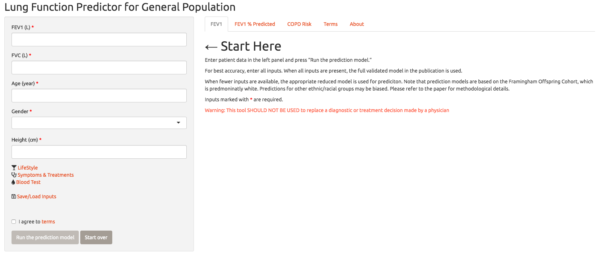

1
Introduction
2
The Study
3
Using the Package in R (Developers Only)
3.1
Installation
Windows 7 or Later
Mac OS Sierra and Later
Ubuntu 16.04 and Later
3.2
Running the Model
4
Using the Web Application
5
Using the Package as an API (PRISM)
5.1
API in R/Javascript/Python/Bash
Setting the Input
Running the Model
5.1.1
Plots
6
Appendix 1: Installing R
6.1
Step 1: Mirrors
6.2
Mac OS X
6.3
Windows
6.4
Ubuntu
Framingham FEV1 Predictor
4
Using the Web Application
We have created a web application which can be found here:

Framingham FEV1 Web Application